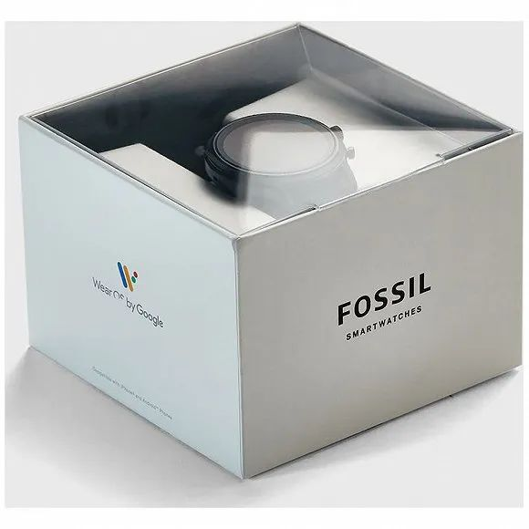
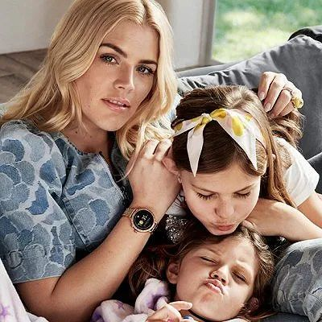
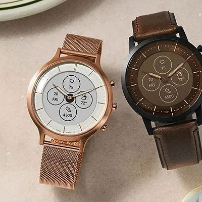

和民居酒屋今正式关闭深圳万象城店，成疫情下首家撤退日企
原文链接 备份链接 来源：品牌官网 记者：卢奕贝 编辑：牙韩翔 “ 此前，经营不善已让和民陆续关掉了在中国内地的大部分门店。 ” 开了16年的日式居酒屋“饗和民”深圳万象城店在今天正式结束营业了。 根据微信公众号“深圳吃货小分队”的报道， …

记者 ：黄姗
编辑 ：周卓然
“
东莞精度表业有限公司（以下简称精度公司）3月21日发布的一份关停风险公告。
”
据一封公告信息显示，受到疫情冲击，美国腕表品牌Fossi近日叫停了在华代加工业务。
该消息来自东莞精度表业有限公司（以下简称精度公司）3月21日发布的一份关停风险公告。精度公司在公告中称，该公司最重要客户美国Fossil品牌“现已全部停止下单，同时要求取消或暂停原生产订单，导致工厂无法正常开工，公司经营已出现重大危机，面临随时关停的风险。”
界面记者就此联系精度公司，截至发稿，该公司尚未作出回应，该公司电话也无人接听。

在中国精度公司宣布停产前三天，美国的Fossil集团宣布关闭所有北美门店和绝大多数欧洲门店。在18日的一份公告中，Fossil集团称欧美门店停业时间将持续到3月28日。同时，该集团撤销了上个月发布的2020全年和第一季度盈利预期。

根据中国钟表协会数据，东莞所处的广东珠三角地区是中国钟表代工厂的集中地之一，集中了大量为西方钟表品牌生产钟表的中小型代工厂。依靠外部订单存活的代工厂在新冠疫情的冲击下正在面临生存的考验。精度公司就是其中一家。
在公告中，精度公司宣布全厂停产三个月的放假安排，并表示对员工这时候辞职的理解，并作出辞职员工的遣散费用等相关安排。
蔓延全球的新冠肺炎疫情对多个行业造成巨大冲击，钟表行业也不例外。奢侈品表商劳力士和百达翡丽上周已经宣布关闭位于瑞士的生产基地至3月底。
LVMH集团旗下的宇舶表也在近日表示，在接到进一步通知之前将暂时关闭生产基地。更早以前，全球最重要的钟表展会“Watches &Wonders”和“Baselworld”钟表展都先后宣布延期，后者将直接推迟到2021年举办。
面对冲击，业绩稳健的企业尚且需要全力以赴小心应对，而早已显出疲态的企业就更举步维艰。
Fossil则属于后者。界面记者翻阅Fossil集团近年财报时发现，从2017年至今，Fossil集团公开招聘岗位的数量就在不断下降。今年2月21日，Fossil集团宣布总部裁员，裁员人数未知。另一方面，Fossil集团还加速了库存大甩卖。在今年1月底，该公司启动了低价库存的甩卖行动。

而这一系列裁员和甩卖动作背后都是Fossil集团应对连年来业绩疲软的结果。
Fossil来自美国腕表销售商Fossi集团，该集团主营智能腕表业务，兼营皮具和珠宝等其它产品。该集团旗下有多个腕表品牌，有Fossil和Missfit这样的自有品牌，也代理BMW、Kate Spade、Michale Kors等多个奢侈品牌的腕表业务 。
近几年，传统上善于指针式电子表开发的Fossil集团着力于战略转型，希望转型成为“混合式智能手表”制造商，以应对竞争愈发激烈的市场环境，和新一代智能手表崛起对传统电子手表带来的冲击。
同时，Fossil集团也在丰富产品品类，包括增加皮具和珠宝等品类来多元化经营范围以此分散全球市场竞争带来的风险。

不过，Fossil集团的转型始终未迎来收获。近年来，该集团业绩增长始终疲软。截止到2019年第四季度末，Fossil集团第四季度录得净销量同比下滑10%。其中，腕表业务录得净销量同比下滑9%，皮具和珠宝业务则录得净销量同比下滑9%和16%。
Fossil集团业绩下滑与美国市场实体零售业处在下行期关系密切。Fossil集团高度依赖批发渠道，这使得该集团缺乏应对外部风险的能力。
虽然Fossil也有直营和奥莱店，但Fossil在京销售渠道的柜台或门面数量是直营渠道的数十倍；这其中，美国本土零售百货如JC Penney、Kohl’s、Macy’s等三家百货公司Fossil门店排名前三。
而美国零售市场这几年正处在洗牌期，这几家零售商都处在市场萎缩阶段，这都间接对Fossil的销量造成负面影响。
业绩持续低迷令资本市场对Fossil失去信心。Fossil集团过去一年股价跌幅为60%，市值严重缩水。去年7月7日，在Fossil集团宣布第三季度净销量同比下滑11.4%后，该集团股价暴跌25%，到了2月26日发布第四季度财报时，该集团股价又跌20%。
新冠疫情或许成为压倒Fossil Group最后一根稻草。美国是Fossil集团最大的市场，2019年该地区营收占比为42.84%。欧洲和亚洲市场次之，营收占比分别为32.26%和24.13%。
随着新冠疫情爆发，美国多个州宣布进入国家紧急状态，其结果是多市零售商被迫关门应对新冠疫情，这其中包括Macy’s等在内的百货商店。这些第三方零售商的关门，以及Fossil自营门店的关门，可预见将极大影响Fossil集团第一季度的业绩。
不过，Fossil集团试图通过强调电商渠道和仍在运营的亚太地区来削弱欧美门店关门带来的影响。在Fossil集团3月18日发布的公告中，该公司强调消费者仍然可以通过官方在线商城购买旗下产品；同时，亚太地区市场的门店仍在运营之中。
新冠疫情在中国内地市场已经得以控制，但消费需求的恢复仍需时间。而在香港地区市场方面，新冠疫情仍有增长的趋势，这也势必为该地区的钟表消费带来诸多不确定性。
事实上，作为东亚地区最重要的钟表市场之一，香港市场的钟表零售业表现并不乐观。根据香港政府统计处数据，2020年1月香港零售业总销货额为378亿港元，同比下跌21.4%。钟表和珠宝在过去半年已经是该地区销量下跌最大的零售领域。
对于Fossil集团而言，欧美仍是其主要业绩市场，得以恢复的亚太地区的销量对于集团整体上半年的业绩恐怕也不会有关键性帮助。
未经授权 禁止转载

原文链接 备份链接 来源：品牌官网 记者：卢奕贝 编辑：牙韩翔 “ 此前，经营不善已让和民陆续关掉了在中国内地的大部分门店。 ” 开了16年的日式居酒屋“饗和民”深圳万象城店在今天正式结束营业了。 根据微信公众号“深圳吃货小分队”的报道， …
原文链接 备份链接 参与《财经》调研的多位企业人士表示，希望政府的金融扶持能更好地惠及小微企业 文 | 《财经》记者 周源 编辑 | 谢丽容 进入2020年3月以来，中国的新冠肺炎疫情蔓延已得到了有力控制，新增确诊和新增疑似病例呈逐日大幅 …
原文链接 备份链接 疫情是危机，也是机遇，暂时的苦难使得我们进一步审视目前国家治理体系的细节，也给予我们一个历史性的机遇做出符合未来一段时间的合理政策安排的时间和空间 2020年2月27日，武汉街头唯有穿梭的外卖员，让这个城市有了一丝鲜 …
原文链接 备份链接 3月22日早六点，国际市场开盘即现“暴动”。美股指期货跌超5%，触及下跌熔断限制，道指期货低开近千点。短期恐慌情绪与结构性失衡相叠加，没有人知道美股何时企稳，以及这会否是全球大萧条的第一声警哨 封面设计/黎立 文 |《 …
原文链接 备份链接 【财新网】（记者 宿慧娴 黄姝伦 综合）国际疫情继续呈暴发态势。在欧洲、美国和伊朗等地抗疫仍处于“白热化”的同时，非洲、南亚和东南亚的疫情大有抬头之势。 病毒是否“怕热”，放过非洲？2月14日，埃及确诊了非洲大陆首个新 …